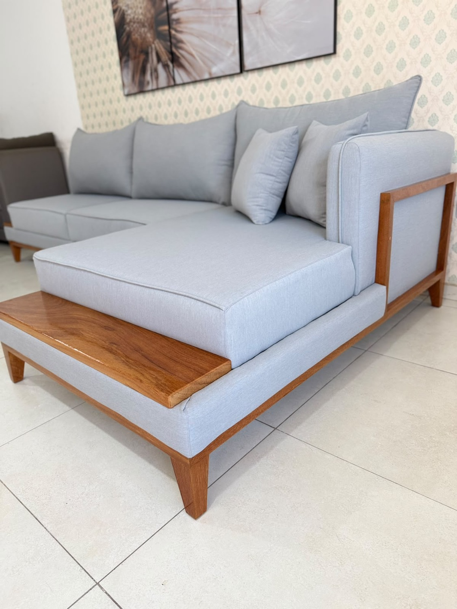
Chaise com base em madeira
Sofá Louise Chaise Nobre
Chaise ampla, base e bandeja lateral em madeira maciça aparente. O modelo que vira o centro da sala.
Pedir orçamento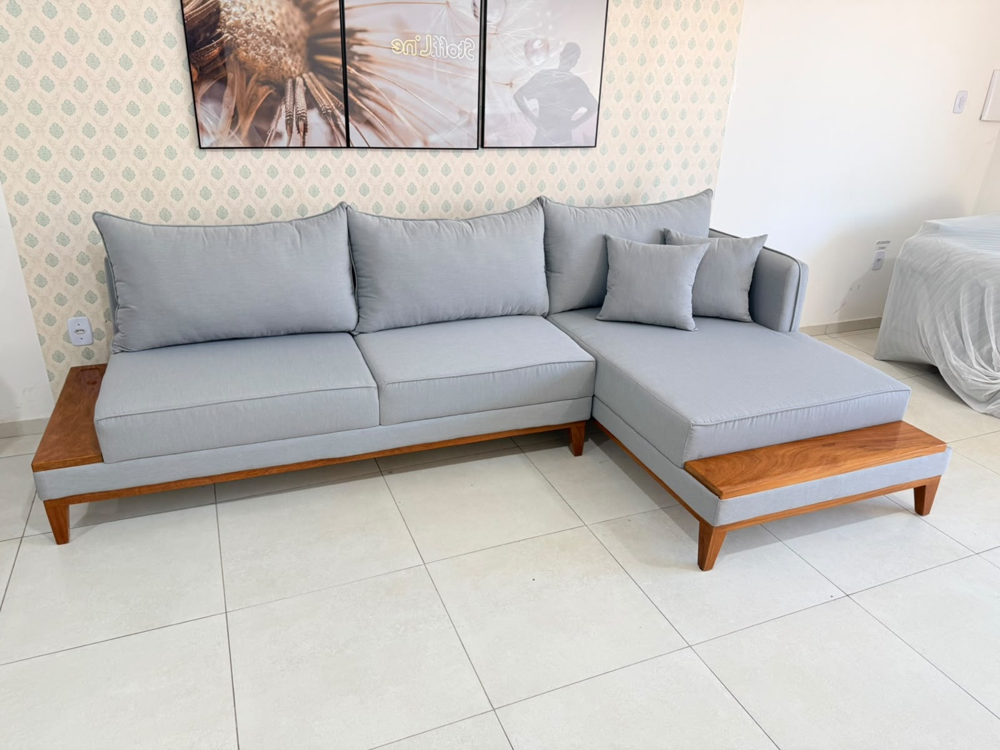
Não vendemos o que sobrou no estoque: fabricamos o sofá certo para a sua sala, na medida, no tecido e no conforto que você escolher. Do projeto ao acabamento, tudo sai da nossa fábrica.
A Stoff Line é uma fábrica de estofados em Feira de Santana. Isso muda tudo: o projeto, a estrutura, a espuma, o corte do tecido e o acabamento acontecem sob o mesmo teto — e sob o mesmo controle.
“O sofá mais barato pode ser o sofá mais caro da sua casa.”
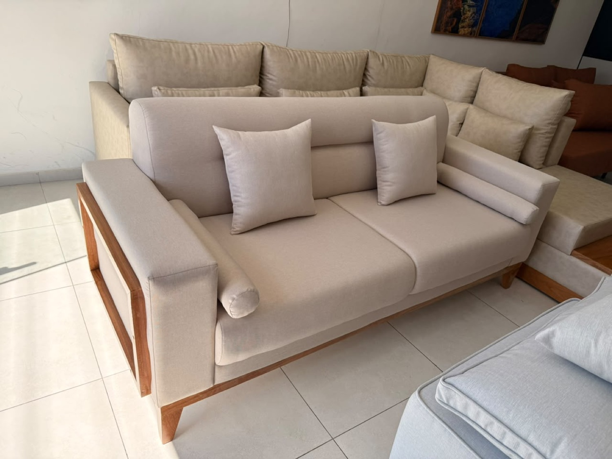
Todo modelo pode ser refeito na sua medida, no seu tecido e na sua cor. E se a sua referência for outra, mande: fabricamos por encomenda, a partir da sua inspiração ou do seu projeto.

Chaise ampla, base e bandeja lateral em madeira maciça aparente. O modelo que vira o centro da sala.
Pedir orçamento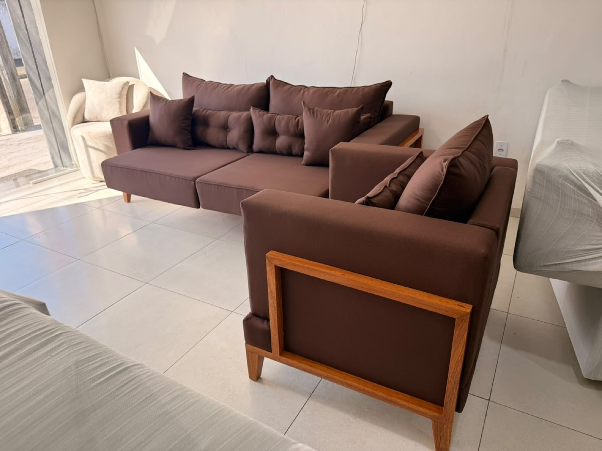
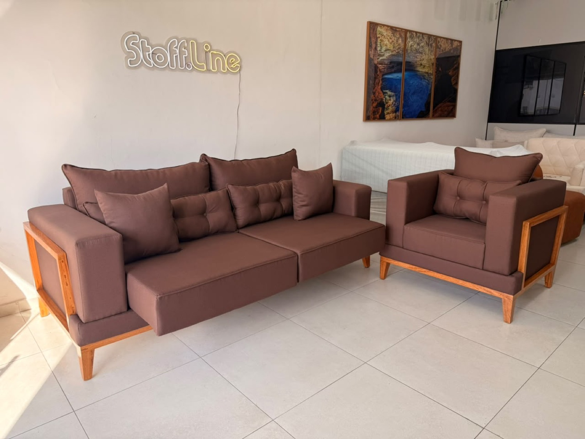
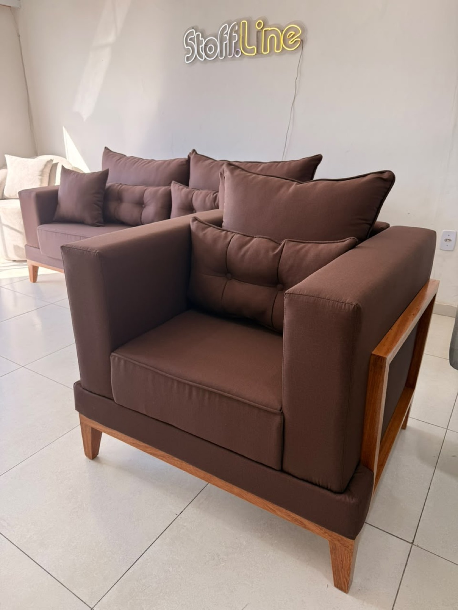
Assento que avança para deitar, moldura de madeira nos braços e almofadas capitonê. Disponível com poltrona do mesmo conjunto.
Pedir orçamento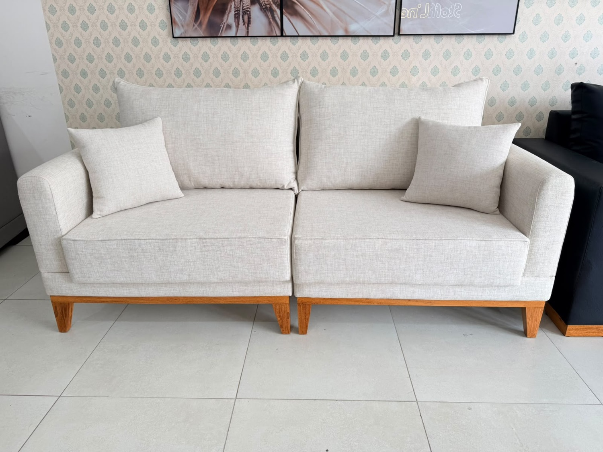
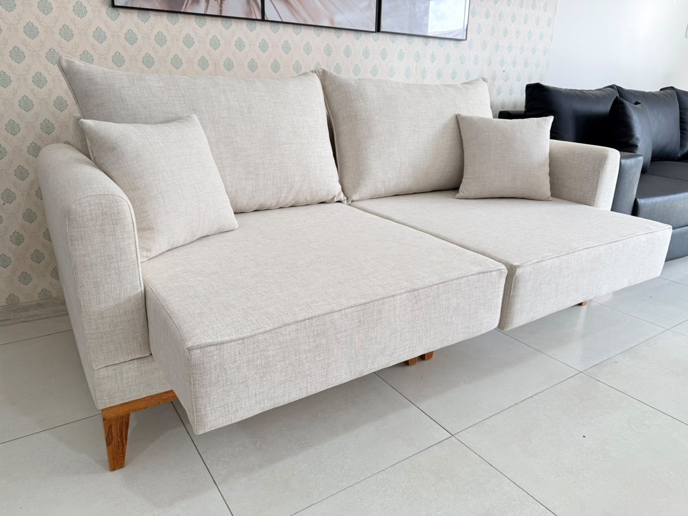
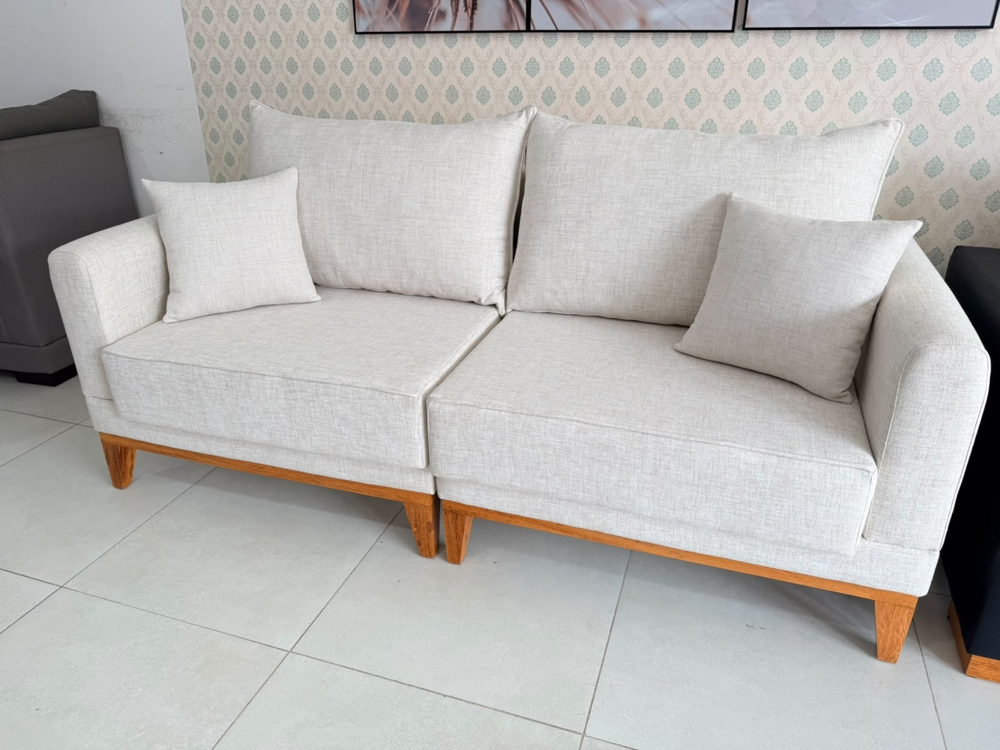
Base de madeira à vista e assentos que se estendem. Linhas macias e tecido claro para ambientes que pedem leveza.
Pedir orçamento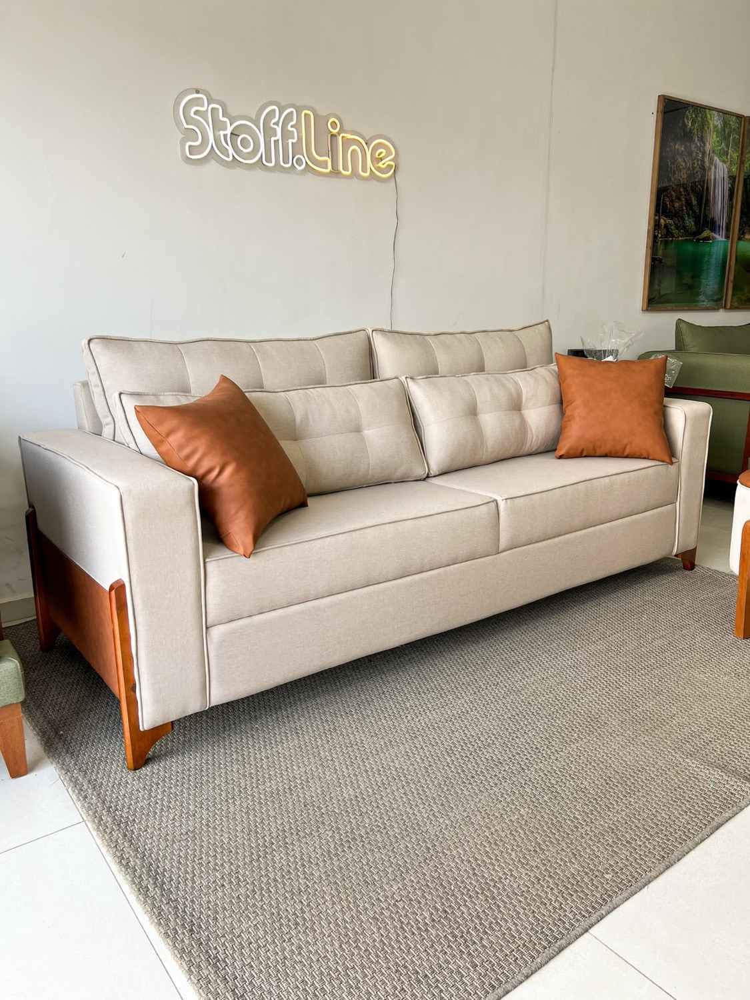
Encosto capitonê, braço com detalhe em madeira e pés torneados. Elegante sem ocupar espaço demais.
Pedir orçamento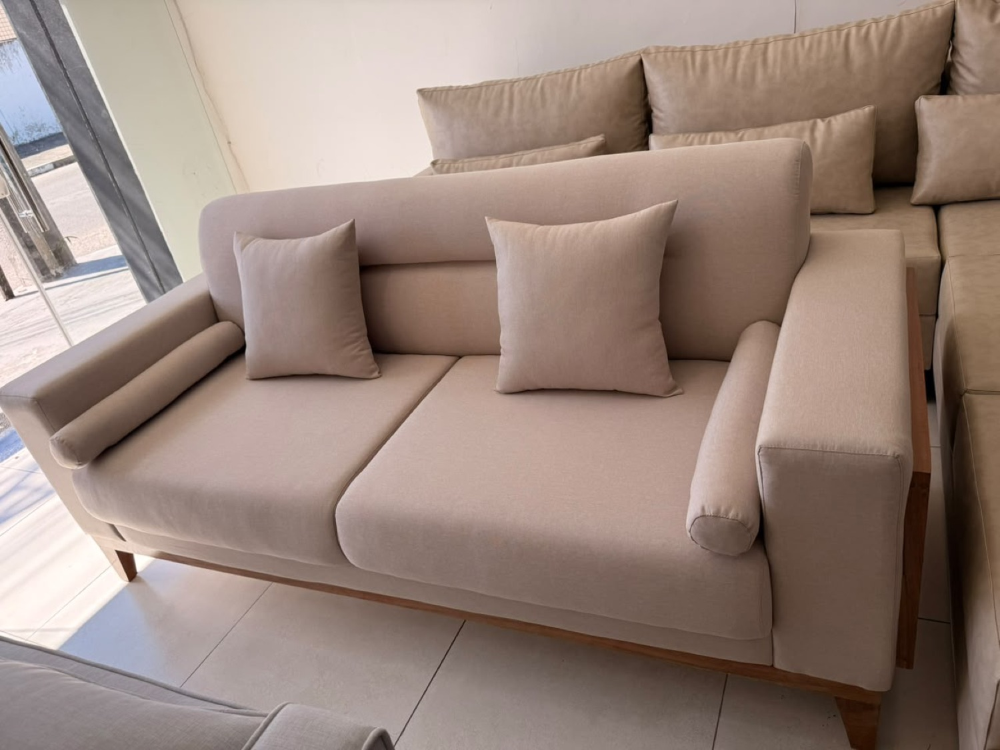
Moldura de madeira emoldurando o braço e almofadas rolo. Assento profundo, perfeito para quem gosta de afundar no sofá.
Pedir orçamentoQuatro etapas simples. Você acompanha cada uma delas direto com a fábrica.
Você manda a foto do espaço e conta como usa a sala. Se já tiver uma inspiração ou um projeto em mãos, mande também: fabricamos por encomenda, não precisa ser um modelo do nosso catálogo.
Definimos modelo, medidas exatas, tecido, densidade da espuma e acabamento. Orçamento fechado, sem surpresa.
Seu sofá entra na linha da fábrica: estrutura, espuma, costura e acabamento, com conferência peça a peça.
A entrega é feita por transportadora parceira. O prazo e o frete até o seu endereço são combinados antes de fechar o projeto.
Leva menos de um minuto para começar a primeira etapa.
Começar meu projetoTrabalhamos com tecidos de fácil limpeza, alta resistência e caimento bonito. Estas são as famílias mais pedidas — o mostruário completo está no showroom.
Textura natural e visual leve
Volume macio e aconchegante
Brilho suave e toque aveludado
Limpeza rápida, cara de couro
Aveludado em tons profundos
Tem pet ou criança pequena em casa? Indicamos o tecido certo para cada rotina — impermeável, pet friendly ou de alta abrasão.
Falar com um consultorBastidores da fábrica, detalhes de acabamento e o sofá em movimento.
Sim — é exatamente o que fazemos. Você envia as medidas do ambiente (ou uma foto com as dimensões) e desenhamos o sofá para caber certinho, inclusive em salas estreitas e apartamentos compactos. Se tiver uma inspiração ou projeto próprio, mande também: fabricamos por encomenda.
Entregamos em Feira de Santana e em várias cidades da Bahia. Fora do estado, atendemos alguns destinos — Sergipe e Pernambuco, por exemplo. A entrega é feita por transportadora parceira, com o frete calculado conforme o endereço. Consulte o seu antes de fechar o projeto.
O prazo varia conforme o modelo, o tecido escolhido e a fila de produção do momento. Peças de pronta entrega saem bem mais rápido. Fale com a gente no WhatsApp que informamos o prazo atualizado do seu projeto.
Em geral indicamos os impermeáveis, os pet friendly ou o couro sintético, que limpa com pano úmido. Conte como é o dia a dia na sua casa que sugerimos as melhores opções.
Preencha ao lado e o pedido vai direto para o WhatsApp da nossa equipe, já organizado. Quanto mais detalhes você contar, mais preciso fica o orçamento.
Prefere resolver na conversa?
Chamar no WhatsAppSentar no sofá antes de comprar muda tudo. Passe no showroom para testar o conforto, ver o acabamento de perto e conhecer o mostruário de tecidos.